- (10 points) Explain why, if a lower bound constraint on nonbasic variable xp is appended to optimal tableau T*, a single pivot on a m+1,p restores optimal form if the appended row m + 1 is the minimum-ratio row in the xp column.
- (10 points) Explain why, if the appended row m+1 is not the minimum-ratio row in the xp column, one or more dual simplex pivots are also required.
Solution:
- After appending the constraint xp -sq = l, we get the following tableau (reordering the
columns if neessary):
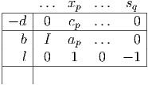 If we pivot on the “1” in the bottom row, we get an updated tableau
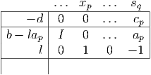 Note that the entries denoted by … have not changed. We have xp = l. This is still in optimal form provided b - lap ≥ 0, which is equivalent to stating that
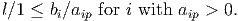 Thus, optimal form is recovered immediately if the appended row m + 1 is the minimum ratio row in column p.
- From the analysis in part (a), if it is not the minimum ratio row then some entry in b - lap is negative, so dual simplex pivots are necessary.
where b1 > 0 and b2 > 0 are fixed parameters.
- (10 points) Find a dual problem (D) to (P).
- (10 points) Assume = (0,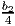, 0, 0) is feasible in (P), with -21+2+23+34 = b1 + Δ, with Δ > 0. Use complementary slackness to show that is optimal.
- (10 points) Use complementary slackness to find another optimal solution to (P).
Solution:
- Dual problem:
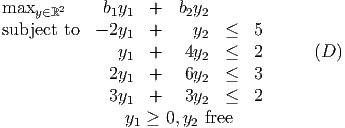 - From complementary slackness, we need y1 = 0 since the first primal constraint is
satisfied strictly. Since x2 > 0, the second dual constraint must hold at equality, so
y1 + 4y2 = 2. Putting these together, we must have y* = (0, 0.5).
Need to check dual feasibility:
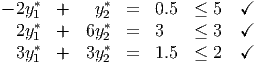 Since we have primal feasibility, dual feasibility, and complementary slackness, we must be optimal.
- Since 2y1* + 6y
2* = 3, we could increase x
3 while still maintaining complementary
slackness. From the second constraint, if we increase x3 by t then we can
decrease x2 by 1.5t and still maintain feasibility. Note that this increases
the left hand side of the first constraint in (P), so we are only stopped by
x2 decreasing to 0. Taking t = b2∕6 gives the alternative optimal solution
 = (0, 0,b2∕6, 0).
= (0, 0,b2∕6, 0).
- Find an initial feasible solution using the NW corner rule.
- Solve the problem (hint: you should only need one iteration).
Solution:
- NW corner rule gives the solution
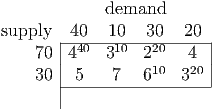 - Calculate dual variables using ui + vj = cij for the basic edges, taking u1 = 0:
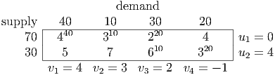 - Calculate reduced costs cij - ui - vj:
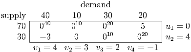 Edge (2, 1) enters the basis:
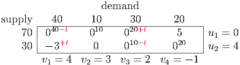 Take t = 10. New basic feasible solution and dual variables:
Update reduced costs:
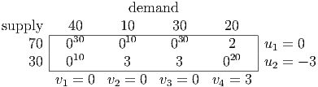 Since all reduced costs are nonnegative, we are optimal.
- (10 points) A feasible solution to the following uncapacitated network flow problem is
indicated:

Use duality to prove that this solution is optimal.
- (10 points) Assume supply increases by Δ > 0 at node 4 and demand increases by Δ at node 3. Use duality to determine the change in the optimal value for small values of Δ. What is the largest possible value of Δ for which your estimate holds. What is the modified shipping schedule?
Solution:
- Calculate dual variables from the basic arcs, using yi - yj = cij. Initialize with
y6 = 0:

Calculate reduced costs cij - yi + yj for nonbasic arcs:
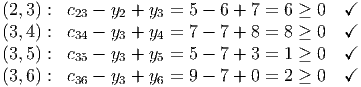 Since all reduced costs are nonnegative, we are optimal.
- Change is
Adjusted flow is

Largest possible value is Δ = 15.

The primal problem requires nonnegative flows that satisfy flow conservation at each node. Formulate the dual problem and verify explicitly that it is infeasible.
Solution:
Dual constraints are yi - yj ≤ cij, y free. Dual problem is
Adding the dual constraints gives
which is clearly infeasible.
The primal problem is feasible: take xij = 0 for each edge. Therefore, by LP duality, the primal problem is unbounded.